Soru 1Cevap: C
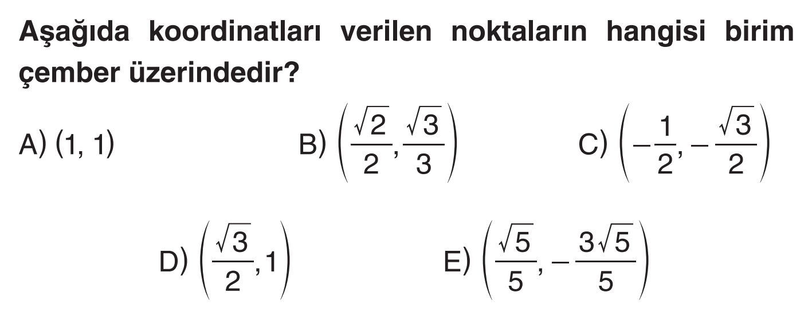
Çözüm
- Birim çember üzerindeki $(x, y)$ noktası $x^2 + y^2 = 1$ eşitliğini sağlar.
- C için: $\left(-\frac12\right)^2 + \left(-\frac{\sqrt3}{2}\right)^2 = \frac14 + \frac34 = 1$ ✓.
- Diğer seçeneklerde kareler toplamı 1 etmez (ör. A: $1+1=2$).
Cevap: C
Soru 2Cevap: D
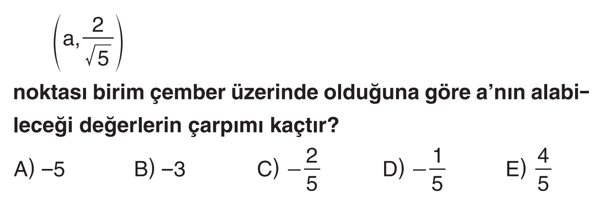
Çözüm
- $a^2 + \left(\frac{2}{\sqrt5}\right)^2 = 1$
- $a^2 = 1 - \frac45 = \frac15$ → $a = \pm\frac{1}{\sqrt5}$
- Değerlerin çarpımı $\frac{1}{\sqrt5}\cdot\left(-\frac{1}{\sqrt5}\right) = -\frac15$.
Cevap: D
Soru 3Cevap: D
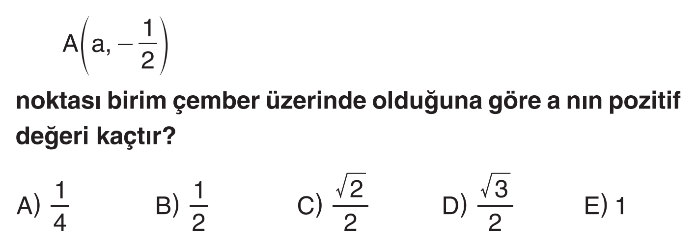
Çözüm
- $a^2 + \left(-\frac12\right)^2 = 1$
- $a^2 = \frac34$
- Pozitif değer $a = \frac{\sqrt3}{2}$.
Cevap: D
Soru 4Cevap: D
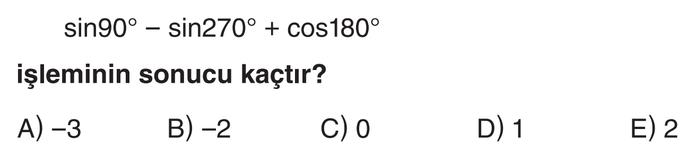
Çözüm
- $\sin90^\circ = 1$, $\sin270^\circ = -1$, $\cos180^\circ = -1$.
- $1 - (-1) + (-1)$
- $= 1$.
Cevap: D
Soru 5Cevap: C
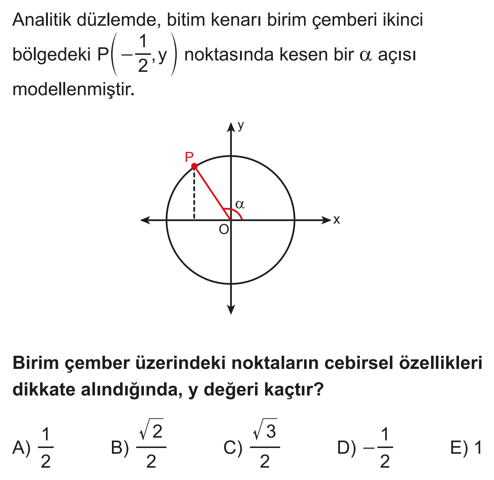
Çözüm
- $\left(-\frac12\right)^2 + y^2 = 1$ → $y^2 = \frac34$.
- P ikinci bölgede olduğundan ordinat pozitiftir.
- $y = \frac{\sqrt3}{2}$.
Cevap: C
Soru 6Cevap: B
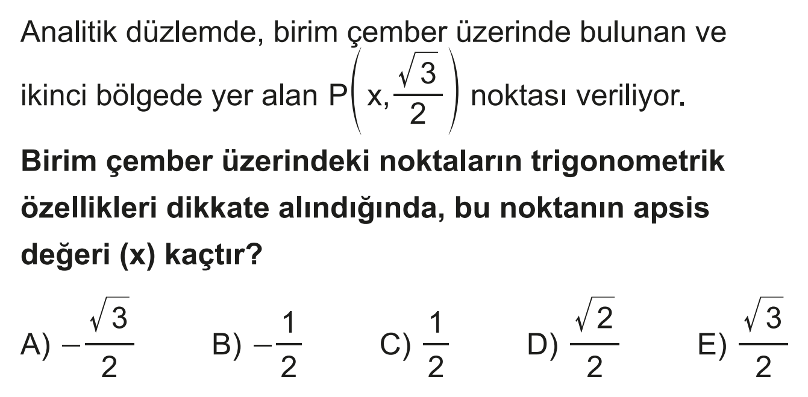
Çözüm
- $x^2 + \left(\frac{\sqrt3}{2}\right)^2 = 1$ → $x^2 = \frac14$.
- İkinci bölgede apsis negatiftir.
- $x = -\frac12$.
Cevap: B
Soru 7Cevap: A
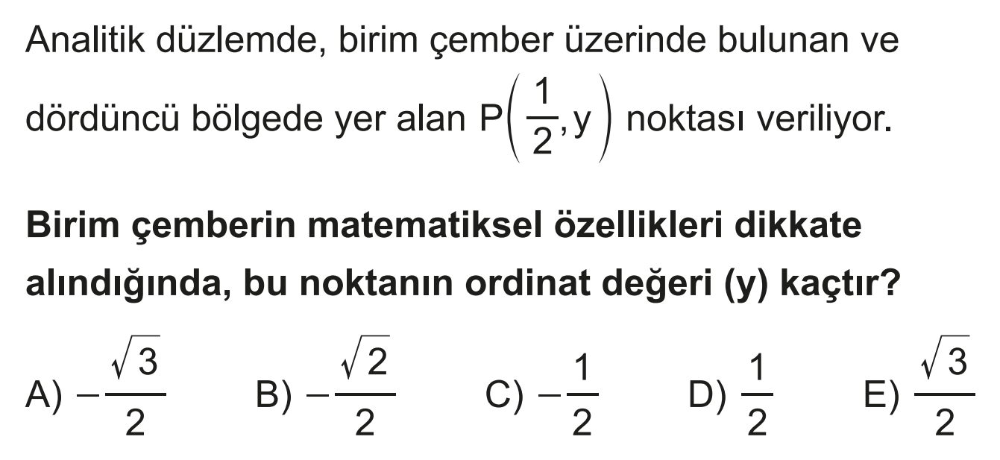
Çözüm
- $\left(\frac12\right)^2 + y^2 = 1$ → $y^2 = \frac34$.
- Dördüncü bölgede ordinat negatiftir.
- $y = -\frac{\sqrt3}{2}$.
Cevap: A
Soru 8Cevap: B
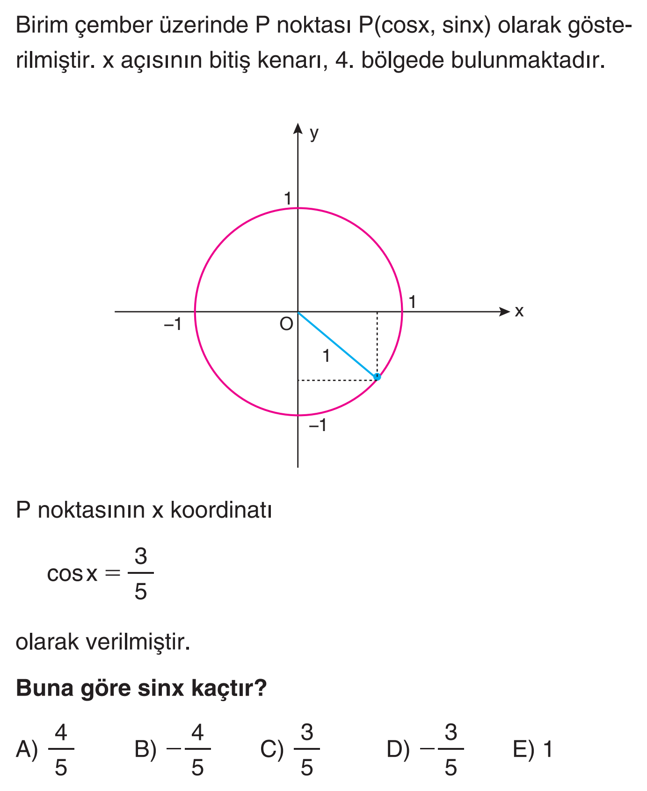
Çözüm
- $\sin^2x + \cos^2x = 1$ → $\sin^2x = 1 - \frac{9}{25} = \frac{16}{25}$.
- Bitiş kenarı 4. bölgede olduğundan $\sin x < 0$.
- $\sin x = -\frac45$.
Cevap: B
Soru 9Cevap: D
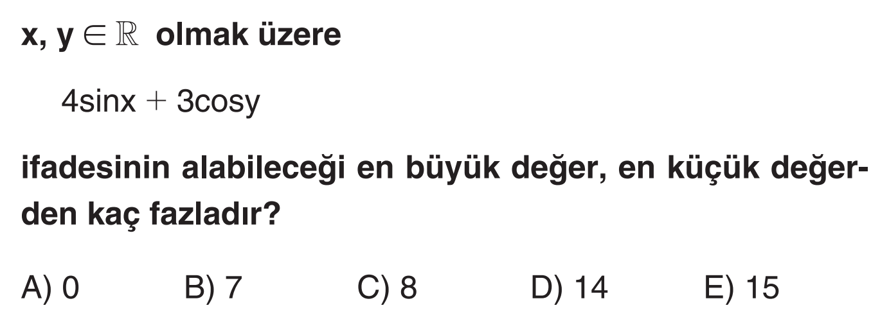
Çözüm
- $x$ ve $y$ bağımsız; $-1 \le \sin x \le 1$, $-1 \le \cos y \le 1$.
- En büyük değer $4 + 3 = 7$, en küçük değer $-4 - 3 = -7$.
- Fark $7 - (-7) = 14$.
Cevap: D
Soru 10Cevap: A
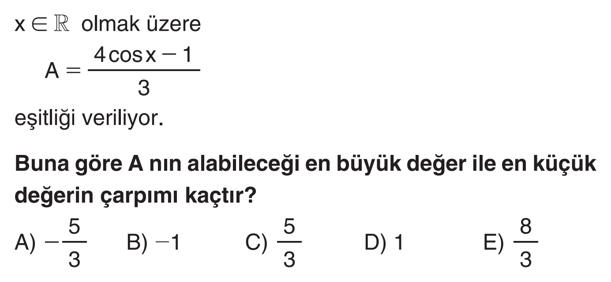
Çözüm
- $-1 \le \cos x \le 1$ → $-5 \le 4\cos x - 1 \le 3$.
- $-\frac53 \le A \le 1$.
- Çarpım $1\cdot\left(-\frac53\right) = -\frac53$.
Cevap: A
Soru 11Cevap: E
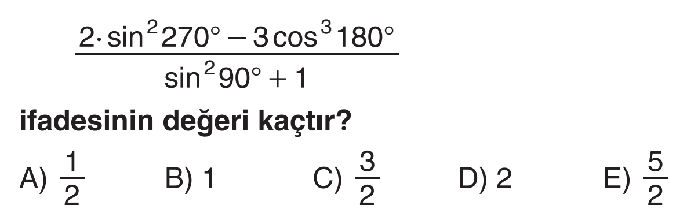
Çözüm
- $\sin270^\circ = -1$, $\cos180^\circ = -1$, $\sin90^\circ = 1$.
- Pay: $2\cdot(-1)^2 - 3\cdot(-1)^3 = 2 + 3 = 5$; payda: $1 + 1 = 2$.
- Sonuç $\frac52$.
Cevap: E
Soru 12Cevap: D
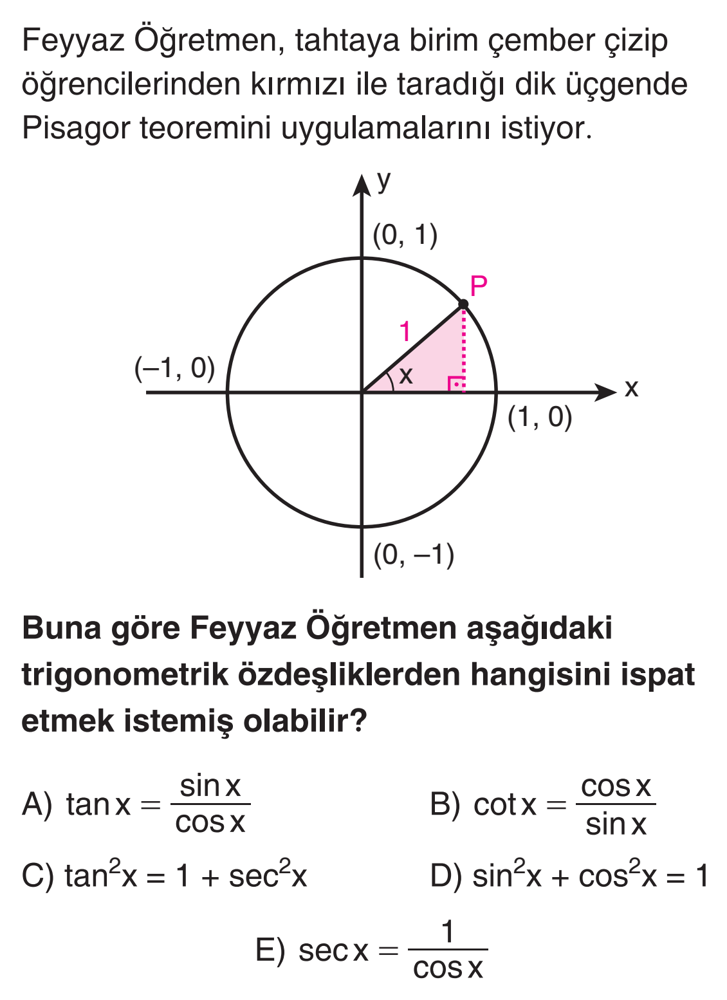
Çözüm
- Taralı dik üçgende hipotenüs 1, dik kenarlar $\cos x$ ve $\sin x$'tir.
- Pisagor teoremi: $(\cos x)^2 + (\sin x)^2 = 1^2$.
- İspatlanan özdeşlik $\sin^2x + \cos^2x = 1$.
Cevap: D
Soru 13Cevap: E
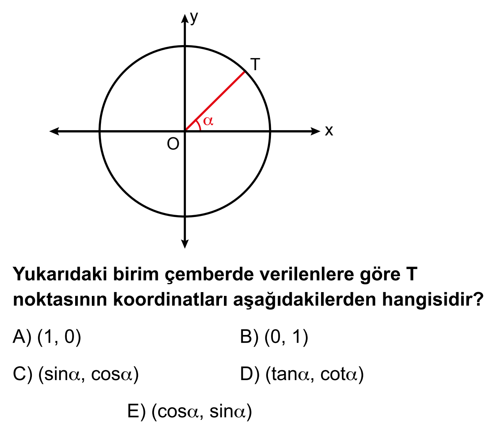
Çözüm
- Birim çemberde yarıçap 1'dir.
- T noktasının apsisi $\cos\alpha$, ordinatı $\sin\alpha$'dır.
- $T(\cos\alpha, \sin\alpha)$.
Cevap: E
Soru 14Cevap: B
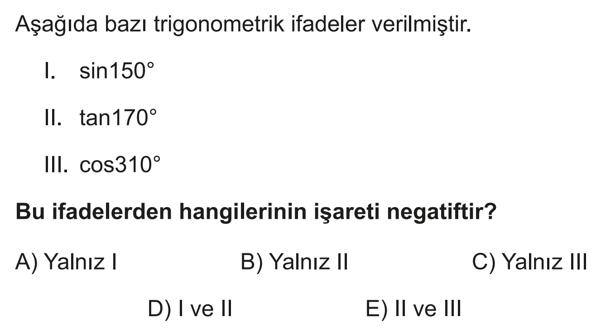
Çözüm
- $150^\circ$ II. bölge → $\sin150^\circ > 0$.
- $170^\circ$ II. bölge → $\tan170^\circ < 0$.
- $310^\circ$ IV. bölge → $\cos310^\circ > 0$. Negatif olan yalnız II.
Cevap: B
Soru 15Cevap: C
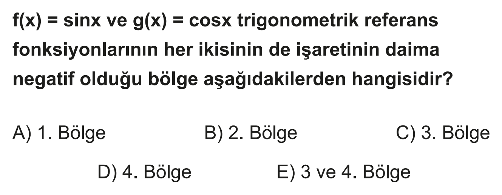
Çözüm
- $\sin x < 0$ olan bölgeler III ve IV.
- $\cos x < 0$ olan bölgeler II ve III.
- İkisi birden negatif: III. bölge.
Cevap: C
Soru 16Cevap: E
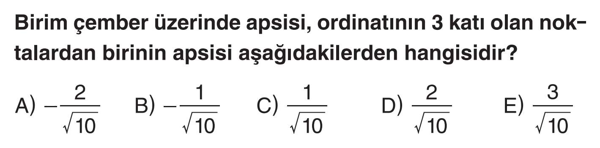
Çözüm
- Nokta $(3y, y)$ biçimindedir: $(3y)^2 + y^2 = 1$.
- $10y^2 = 1$ → $y = \pm\frac{1}{\sqrt{10}}$.
- Apsis $x = 3y = \pm\frac{3}{\sqrt{10}}$; seçeneklerde $\frac{3}{\sqrt{10}}$ var.
Cevap: E
Soru 17Cevap: E
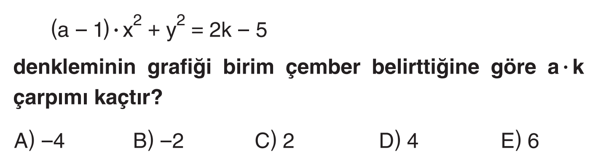
Çözüm
- Birim çember denklemi $x^2 + y^2 = 1$.
- $a - 1 = 1$ → $a = 2$; $2k - 5 = 1$ → $k = 3$.
- $a\cdot k = 6$.
Cevap: E
Soru 18Cevap: D
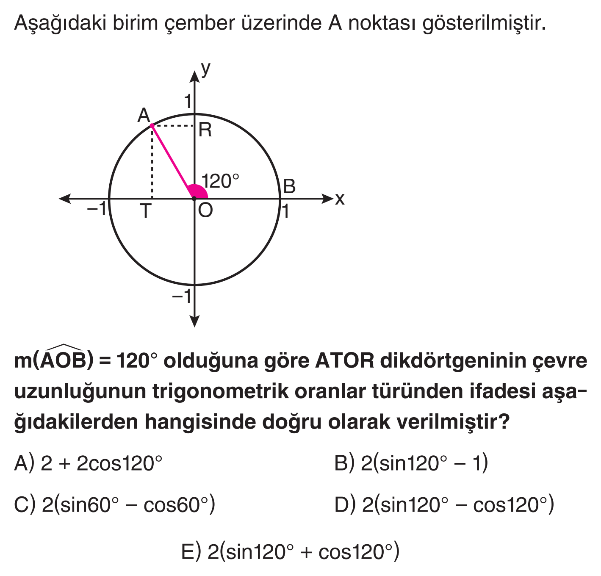
Çözüm
- $A(\cos120^\circ, \sin120^\circ)$; $|AR| = |OT| = -\cos120^\circ$, $|AT| = \sin120^\circ$.
- Çevre $= 2(|AT| + |AR|)$
- $= 2(\sin120^\circ - \cos120^\circ)$.
Cevap: D
Soru 19Cevap: D
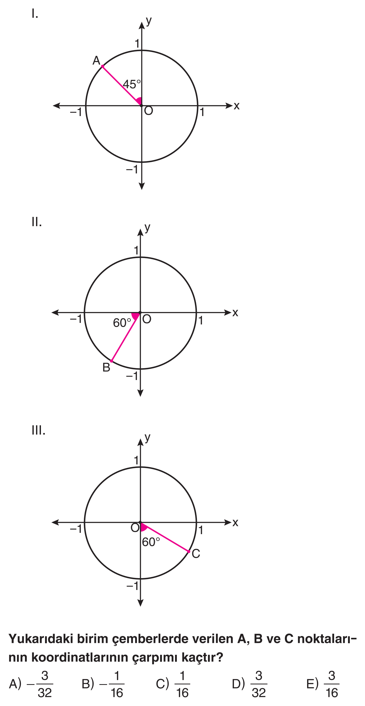
Çözüm
- $A$ ($135^\circ$): $\left(-\frac{\sqrt2}{2}, \frac{\sqrt2}{2}\right)$ → çarpım $-\frac12$.
- $B$ ($240^\circ$): $\left(-\frac12, -\frac{\sqrt3}{2}\right)$ → $\frac{\sqrt3}{4}$; $C$ ($330^\circ$): $\left(\frac{\sqrt3}{2}, -\frac12\right)$ → $-\frac{\sqrt3}{4}$.
- Hepsinin çarpımı $-\frac12\cdot\frac{\sqrt3}{4}\cdot\left(-\frac{\sqrt3}{4}\right) = \frac{3}{32}$.
Cevap: D
Soru 20Cevap: D
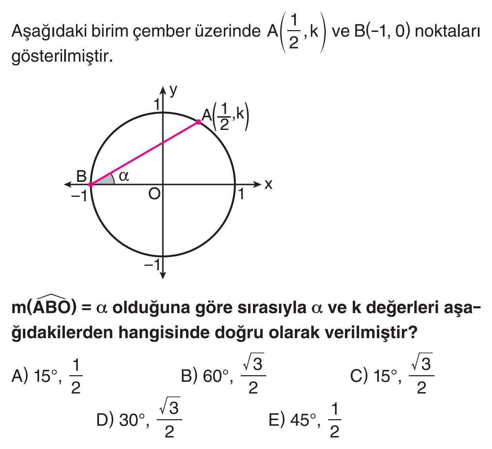
Çözüm
- $A\left(\frac12, k\right)$ birim çemberde ve I. bölgede → $k = \frac{\sqrt3}{2}$.
- $\cos(\widehat{AOx}) = \frac12$ → $m(\widehat{AOx}) = 60^\circ$; $\widehat{AOB} = 120^\circ$.
- $|OA| = |OB|$ olduğundan AOB ikizkenar: $\alpha = \frac{180^\circ - 120^\circ}{2} = 30^\circ$.
Cevap: D
Soru 21Cevap: B
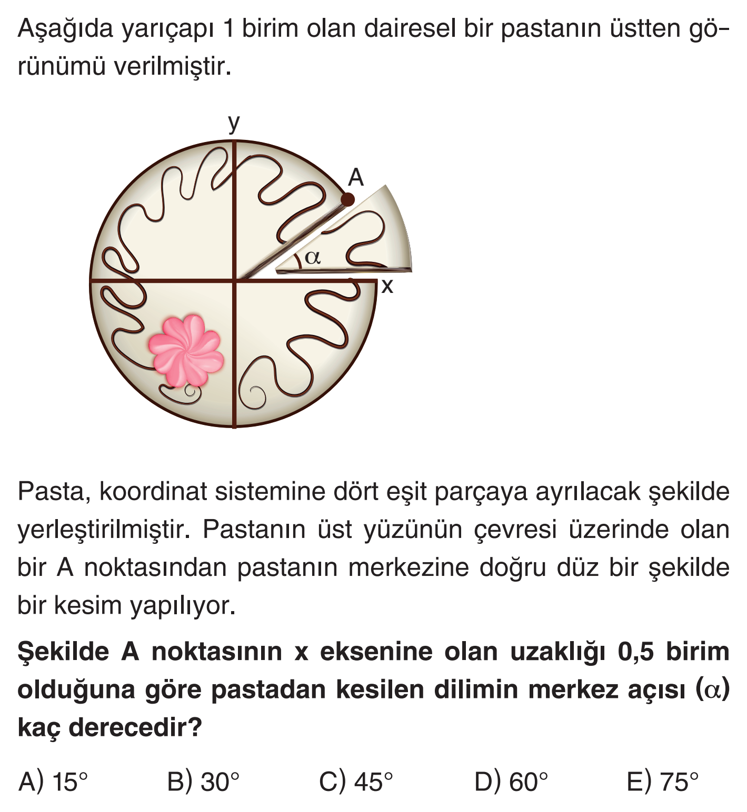
Çözüm
- Yarıçap 1 olduğundan A noktası birim çember üzerindedir: $A(\cos\alpha, \sin\alpha)$.
- A'nın x eksenine uzaklığı ordinatıdır: $\sin\alpha = 0{,}5$.
- Dar açı olduğundan $\alpha = 30^\circ$.
Cevap: B
Soru 22Cevap: B
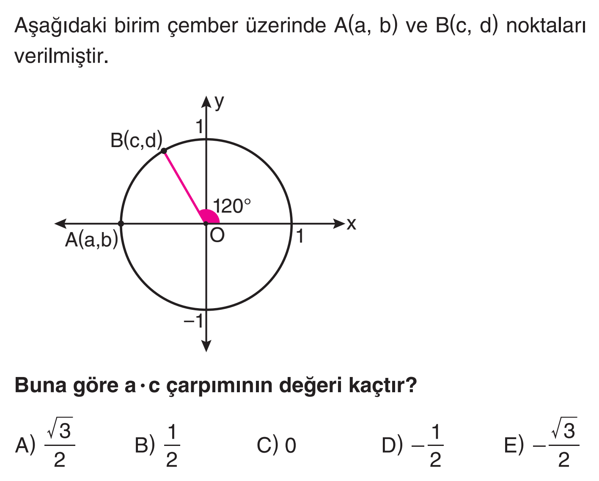
Çözüm
- A noktası $(-1, 0)$ → $a = -1$.
- B noktası $120^\circ$'lik açının uç noktası → $c = \cos120^\circ = -\frac12$.
- $a\cdot c = (-1)\cdot\left(-\frac12\right) = \frac12$.
Cevap: B
Soru 23Cevap: C
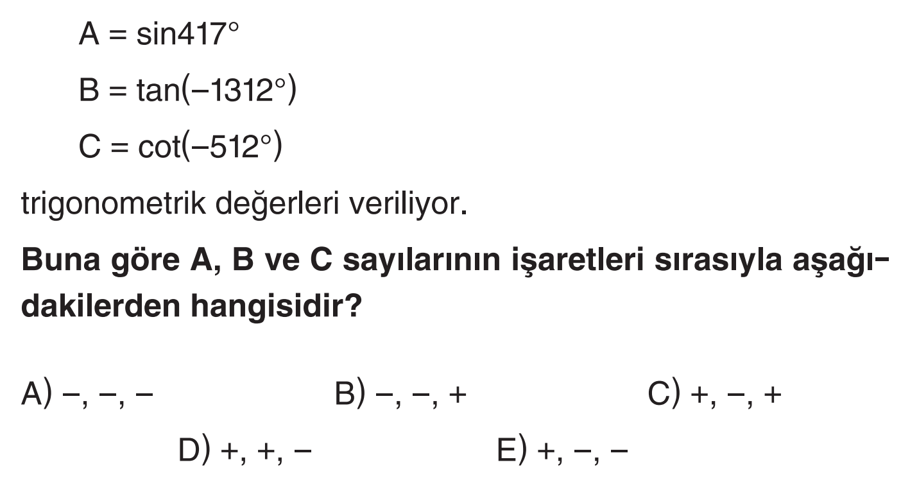
Çözüm
- $417^\circ \to 57^\circ$ (I. bölge) → $A > 0$.
- $-1312^\circ + 4\cdot360^\circ = 128^\circ$ (II. bölge) → $\tan$ negatif, $B < 0$.
- $-512^\circ + 720^\circ = 208^\circ$ (III. bölge) → $\cot$ pozitif. İşaretler $+, -, +$.
Cevap: C
Soru 24Cevap: C
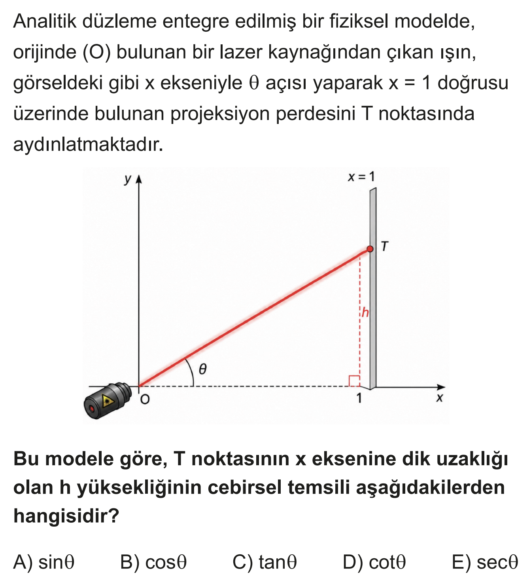
Çözüm
- Lazerin çıktığı O ile perdenin tabanı $(1, 0)$ arası 1 birimdir.
- Dik üçgende $\tan\theta = \frac{h}{1}$.
- $h = \tan\theta$.
Cevap: C